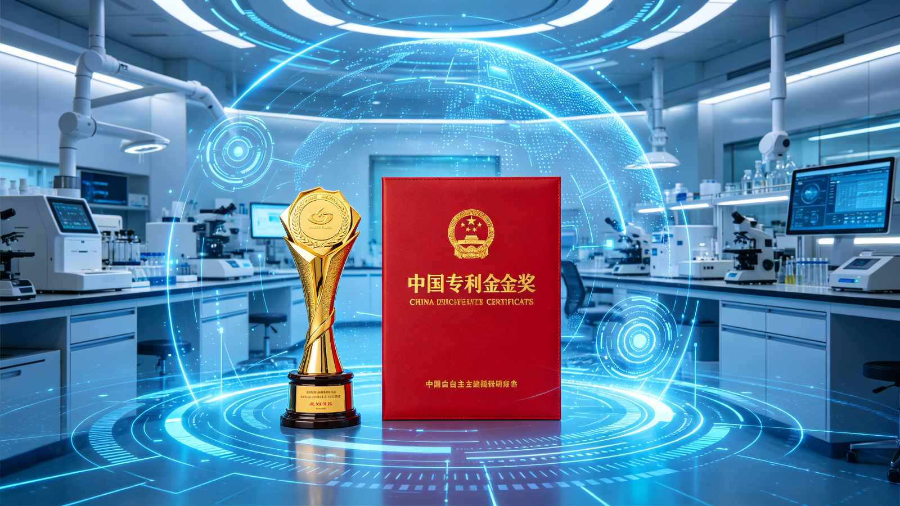
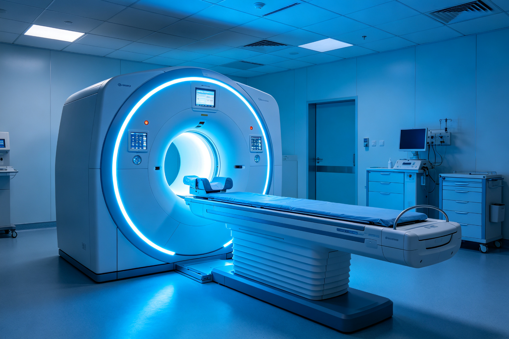
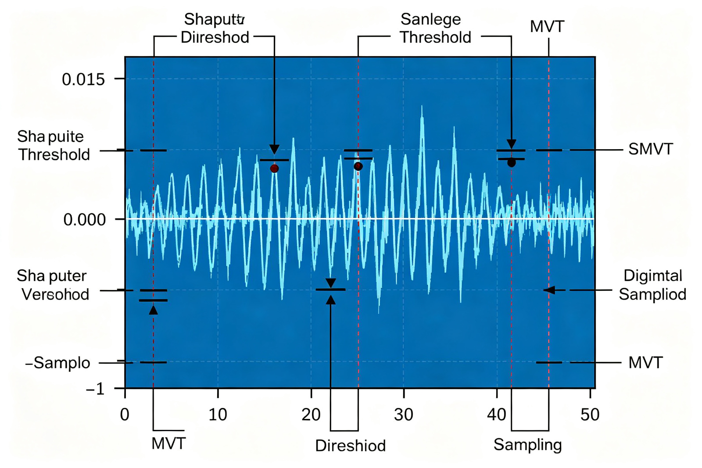
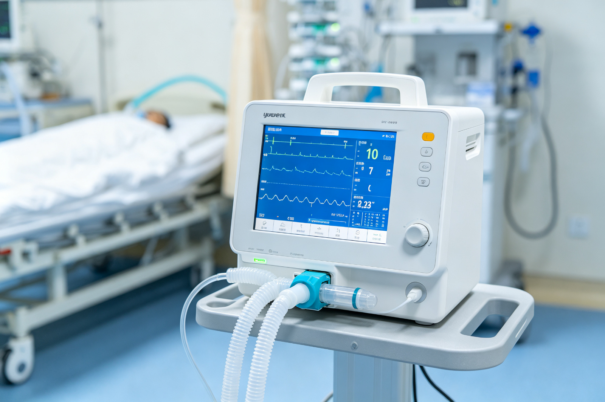
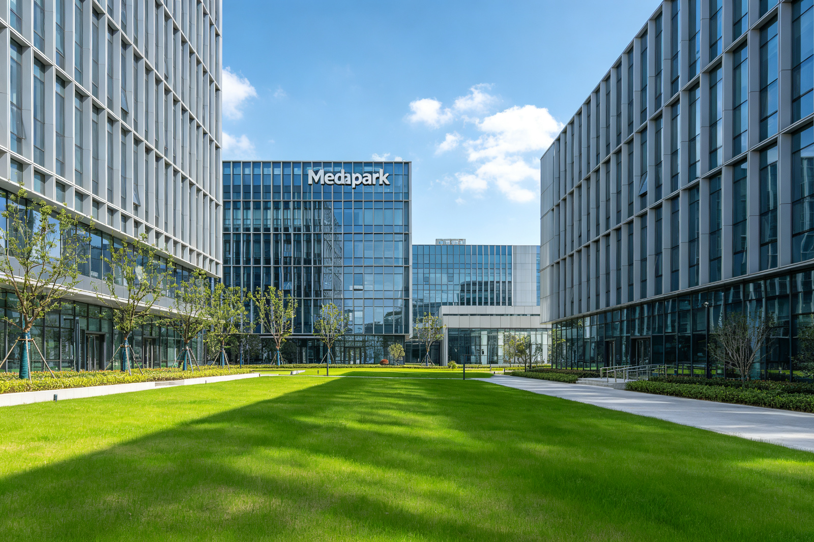

China Patent Gold Award! One third of the province's total!
The China Patent Award is the only government award in China that specifically rewards inventions and creative works granted patent rights. It is the highest accolade in China's patent field, jointly presented by the National Intellectual Property Administration of China and the World Intellectual Property Organization (WIPO). The criteria for evaluation not only emphasize the technological level and innovation height of the project but also its application during market conversion.
At the 22nd China Patent Award selection, Jiangsu Province won a total of six patents for China Patent Gold Awards. Among these, Suzhou New District claimed two awards, accounting for one-third of the province's total. These two gold-winning patents come from Rayence Technology and Yuyue Medical, both in the high-end medical device sector, highlighting the innovative strength of Suzhou New District in the medical device industry.
One: Raynergy Technology: "A Digital Method for Scintillation Pulses"

RuiPine Technology's award-winning patent "A Method for Digitizing Scintillation Pulses", breaking through technical barriers, ushered in the era of full digitalization for PET.
† Solved the world challenge of accurately sampling ultra-high-speed flickering pulse signals", which is equivalent to advancing PET from the film camera era into the digital camera era.
"The fully digital PET based on this patent not only has superior data quality but also features modularized and simplified hardware components"", and it can be achieved using consumer electronics without being constrained by export restrictions on high-end chips."

The award-winning patent technology of the Reipeng team has demonstrated a leading role in both the PET field and radiation detection. For example, digitalization enables PET systems to break away from closed system designs, making specialized local PETs possible, including brain-specific PET, proton knife PET, endoscopic PET, etc. This batch of specialized PET devices will become powerful tools for clinical research, promoting cutting-edge foundational studies in the physiology, pathology, diagnosis, and treatment of major diseases such as brain disorders and tumors.
The award-winning patent is not only applicable to the medical field but can also be used in nuclear radiation detection, oil exploration, security CT, and many other areas, demonstrating strong technical versatility. Reipeng aims to widely share its invention achievements with relevant industries through a technology licensing model, driving technological progress and industry innovation.
II. Yuyue Medical: "A Breathing Machine"

Yuyue Medical's award-winning patent 'A Breathing Machine' has overcome the critical technical bottleneck in the medical equipment industry for ventilators, achieving domestic substitution of ventilators.
Three major innovations:
◆ Innovative laminar structuremaking human-machine synchronization more precise;
◆ Efficient and low-noise humidification technologyreducing noise while achieving efficient humidification;
◆ Modular design of productsmeeting the high-efficiency production requirements of fully automated assembly lines, as well as enabling rapid disassembly, disinfection, and replacement of airway modules to reduce cross-infections and improve treatment efficiency.
Currently, the award-winning patent has been widely implemented in Yuyue's ventilator products, driving an overall improvement in industry technical levels, enhancing global competitiveness, significantly reducing market prices and social medical costs for similar products, and alleviating patients' medical burdens.
Suzhou Yuyue is a major R&D and production center for ventilators. As the first company in Suzhou to obtain certification for an intellectual property management system and as a practice base for patent examiners of the National Intellectual Property Administration's Patent Office, it places great emphasis on enterprise intellectual property construction work. It has cumulatively filed 333 patents, including 64 invention patent applications; it currently owns 245 valid domestic patents, including 10 valid domestic invention patents and one valid foreign patent; it also holds five registered trademarks and three software copyrights.
Yuyue Medical's R&D and production of ventilators have cumulatively sold over 100,000 units with cumulative sales revenue exceeding 1 billion yuan, firmly holding the top position in market share among domestic brands.
III. Strong Intellectual Property District: Innovation Ecosystem of Suzhou High-Tech Zone

Suzhou High-tech Zone is intensively advancing and implementing the intellectual property strong enterprise strategy, enhancing enterprises' awareness of intellectual property protection, and building a complete intellectual property management system. Currently, many companies have been awarded titles such as National Intellectual Property Demonstration Enterprises and Advantageous Enterprises.
As an operational entity for Medpark, the Suzhou City Medical Device Industry Intellectual Property Operation Center is one of the first five key industry intellectual property operation centers in Suzhou City. It integrates key enterprises and university research institutions within the region to carry out patent operations around key development areas. Recently, Medpark has been honored with the title of 'Advanced Collective for Intellectual Property Protection Work' in Suzhou City due to its work in intellectual property.
The acquisition of two China Patent Gold Awards not only highly recognizes the innovative achievements of Rayence and Yuyue Medical, but also vividly demonstrates the innovative ecosystem of Suzhou High-tech Zone's medical device industry. In the future, with the emergence and transformation of more high-value patents, Suzhou High-tech Zone will continue to play a leading role in the field of advanced medical devices, contributing to the development of China's healthcare industry.